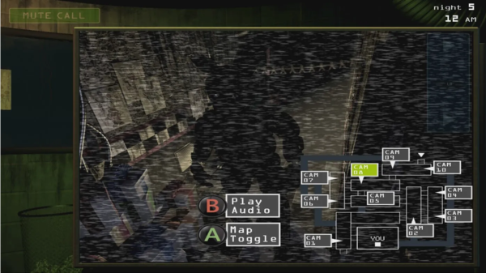

TRAILER
O que é FNAF
FNAF, abreviação de "Five Nights at Freddy's", é uma série de jogos de terror criada por Scott Cawthon. Nos jogos, os jogadores assumem o papel de um guarda noturno que trabalha em uma pizzaria chamada Freddy Fazbear's Pizza. O objetivo é sobreviver a cinco noites consecutivas enquanto é perseguido por animatrônicos sinistros que ganham vida à noite. A série ganhou popularidade devido à sua atmosfera assustadora, jogabilidade tensa e uma história intrigante, que envolve mistérios sobre a origem dos animatrônicos e os eventos macabros que ocorreram na pizzaria.
Gameplay
FNAF é um jogo com elementos de point-and-click, que o jogador atua como um guarda noturno da pizzaria, em que tem que sobreviver das 11 horas da noite até 6 horas da manhã na pizzaria em que tem 4 animatrônicos tentando te matar
O jogador, sozinho em um escritório, tem acesso a uma rede de câmeras de segurança que fornecem vistas de várias partes do restaurante.Essas câmeras são usadas para rastrear os movimentos dos animatrônicos durante a noite. Cada personagem animatrônico possui padrões de movimentos distintos, e a maior parte desses movimentos ocorre fora da tela.A rede de câmeras é pouco iluminada e composta por ruídos, e uma câmera de segurança, localizada na cozinha, fornece apenas uma escuta de áudio. As câmeras não cobrem certas áreas do edifício, principalmente os dois corredores diretamente à esquerda e à direita do jogador, que exigem verificação por luzes que o jogador pode controlar clicando em um botão localizado ao lado de cada porta em seu escritório. O jogador não pode sair do escritório e deve fechar as portas do mesmo para autodefesa, o que também pode ser feito clicando nos botões adjacentes a cada porta.
|  | |
 |
O uso dessas mecânicas (câmeras, luzes e portas) consome energia elétrica limitada do jogador; se toda energia acabar, as câmeras ficam inoperantes, as portas abrem e as luzes se apagam. O principal animatrônico do restaurante, Freddy Fazbear, aparecerá posteriormente na porta esquerda com luzes piscando em seus olhos, enquanto uma versão em caixa de música da canção "Toreador March" toca. Após um período de tempo aleatório, o escritório ficará escuro e Freddy dará um jumpscare no jogador, resultando no final do jogo, a menos que o jogador chegue às 6 da manhã antes que isso ocorra. Se o jogador sofrer um jumpscare por qualquer um dos animatrônicos, deverá reiniciar desde o início da noite.